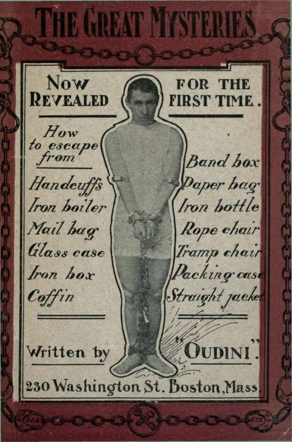
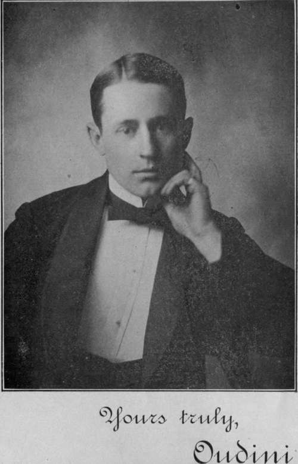

Secrets Of The Great Mysteries | by Oudini
In publishing this book a faithful endeavor has been made to present all the best tricks that the author has performed, both in public, in theatres and places of amusement, and in private. It is believed, then, that this book is complete; containing a greater number of tricks in actual usage than any other work yet published, with full explanations and illustrations in regard to the various methods of escape, as used by the author
| Title | Secrets Of The Great Mysteries |
| Author | Oudini |
| Publisher | Oudini |
| Year | 1909 |
| Copyright | 1909, Frank J. Rowan and E. T. Stewart |
| Amazon | Secrets Of The Great Mysteries |
NOW Revealed for the First Time.
A Complete Guide And Reliable Authority Upon All Tricks.
Full Explanation of How the Various Tricks are Performed, with Diagrams and Illustrations.
Written And Published By The Handcuff King," Oudini"
 Preface
Preface- It would be impossible to print in one volume the thousand and one tricks that are occasionally performed. The larger proportion of such tricks have but a temporary existence, performed to-day and for...
- The Cabinet
- The cabinet is the first piece of apparatus to be considered, as it is the principal thing in the work. It is made of galvanized iron piping, five-eighths inch in diameter, arranged as shown in Fig. 1...
- The Handcuff Expose
- It has always been a most mystifying thing to the spectators, to witness the escape of a performer after being locked in handcuffs, leg irons, and chains. To see him free himself from them in less tim...
- The Iron Boiler
- An iron boiler, such as is used by hotels, is seen upon the stage. This is examined by the committee to see that there is no defect. The performer is seen to enter the boiler. Tire cover is then place...
- How To Escape The Iron Boiler
- The rods are grasped in the middle and can be bent and broken, after which they are pushed out and fall to the floor. If the rofls cannot be broken the performer must have a small hack saw or file con...
- The Mail Bag
- The committee from the audience examines the mail bag carefully, inside and out, and find it perfect in every respect, with no opening except at the top; which can be securely fastened, as described a...
- How To Prepare For The Escape From The Mail Bag
- The performer must have a duplicate key for the lock which is used. This is fastened to a string, as shown in Fig. 3, and the other end of the string tied inside of the clothing, so that it cannot be ...
- The Glass Case
- The glass case used in this act is made to order, and is quite expensive, being made of one-quarter inch glass on the sides and top, and three-eighths inch glass on the bottom. All this has to be dril...
- How To Escape From The Glass Case
- The heads are removed from the hinge bolts by means of the horseshoe key, which is also shown in Fig. 5, and which fits into the small holes these padlocks to each hasp, and there are sixteen hasps in...
- The Iron Box
- This trick is one of the best I have ever exhibited in public, for it appears to the audience to be impossible to execute, and is extremely mystifying. It is, however, not difficult if the secret is k...
- Explanation Of The Iron Box
- The method of escape is as follows: When the bolts are passed out through the holes in the cover, the solid bolts shown in Fig. 4 are not used, but those shown in Fig. 3 are substituted. In this bolt ...
- The Coffin
- This is a most spectacular act, and gives an appearance of great mystery. A wooden casket is seen upon the 'stage and carefully examined by the committee: The cover is securely screwed on with two-...
- The Band Box
- The Bandbox trick is a most mystifying one; from the nature of the material, it would seem that any attempt to make an escape would be shown by the box afterward. The box used is in two parts, as s...
- The Paper Bag
- A paper bag about seven feet high and two feet across is Seen upon the stage. A committee from the audience is invited upon the stage to examine the bag, which is found to be without any break or open...
- The Iron Bottle
- An iron bottle, having the appearance shown in the upper figure, is seen standing on the stage, and is shown to the committee for examination. It is found to be made in one piece, of iron of the same ...
- How To Escape From The Roped Chair
- It is a very mystifying thing to an audience to see a man securely tied to a chair with about thirty feet of rope, with his hands tied together behind the chair, and his legs and feet tied to the chai...
- Tramp Chair
- A tramp chair, such as the farmers of Maine once used to keep tramps in overnight, is seen upon the stage. This is made of heavy iron straps interlaced as shown in the illustrations. It is provided wi...
- Method Of Escape From The Tramp Chair
- Referring to Fig. 3b, it will be seen that there is a special arrangement of the upper section of the long hinge. By reaching through the openings the rod can be pulled down until the round knob can b...
- The Packing Case
- The packing case used in this trick is large enough to hold the performer easily, about three feet each way. It is made of 7/8-inch white pine boards with all joints matched, and is strongly nailed wi...
- How To Escape The Packing Case
- Aitev the performer is in the box and the cabinet in place, he takes a small screw driver which he has concealed about him and removes the three, screws from the front cleat, Fig. 3, C, and removes ...
- Escape From Straight Jacket
- This act is also performed in view of the audience. The performer stands in the centre of the stage and the straight jacket is examined and placed on him by the committee. The regulation straight j...
- How To Escape From The Bean Giant Handcuff
- The Bean Giant handcuffs, so called from the inventor, Captain Bean, are known all over this country to the police and handcuff kings as the hardest cuff to escape from if placed on with the hands beh...
- Description Of Handcuffs
- Until about five years ago, people who were not particularly interested in the subject or who had no connection with police methods were entirely unfamiliar with handcuffs. To-day, however, owing to t...
- Comments By The Press
- Oudini, the mysterious second Houdini, will give exhibitions at the Park Square Rink during next week, each afternoon and evening. On Monday night he will be handcuffed, chained and shackled, and wi...
- Comments By The Press. Part 2
- Henry Lamieux had a pair of handcuffs which he declared no man could get out of. Oudini was the man on the spot, for with a few twists and a few more turns, he loosed his wrists from their bonds and...
- Comments By The Press. Part 3
- Oudini week at the Orpheum. That item is enough to fill the house to the doors at every performance and if the noted handcuff wonder gets the houses that he got all last week in Boston the New Orphe...
- Program Used At Park Square, Feb. 3, 1908
- Oudini week at the Rink. Monday afternoon and evening, Feb. 3, The Mysterious Wonder will be handcuffed, chained and shackled. Come and see how easy he gets out of them. He challenges any person in ...